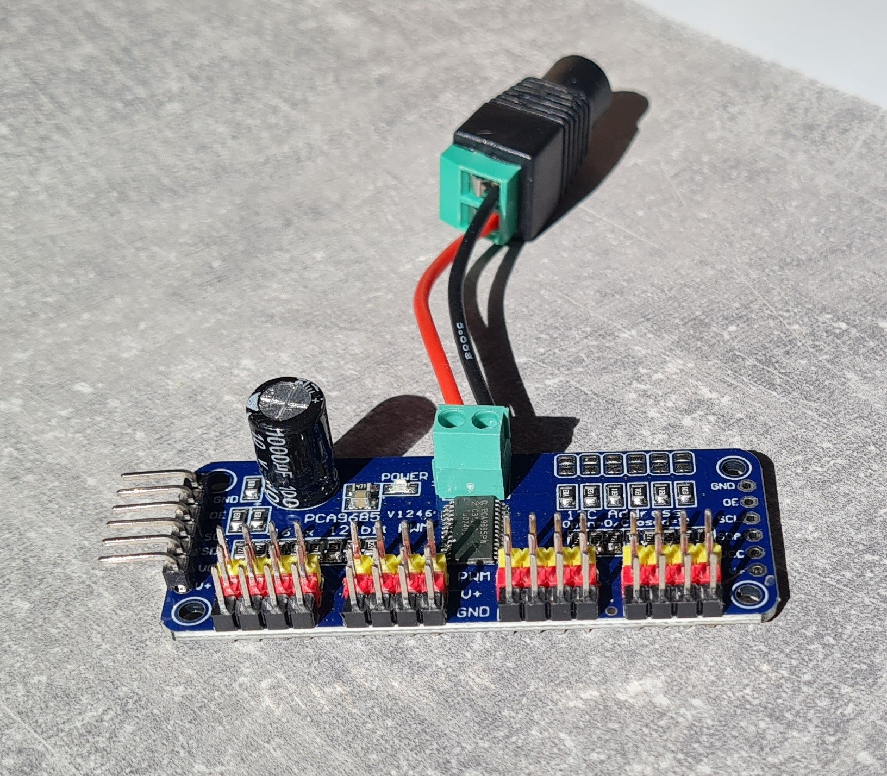
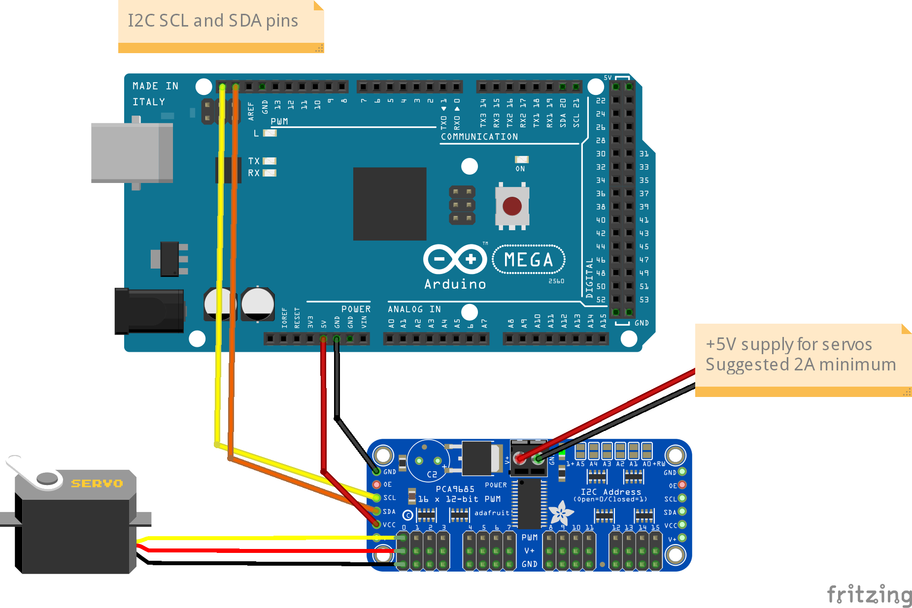
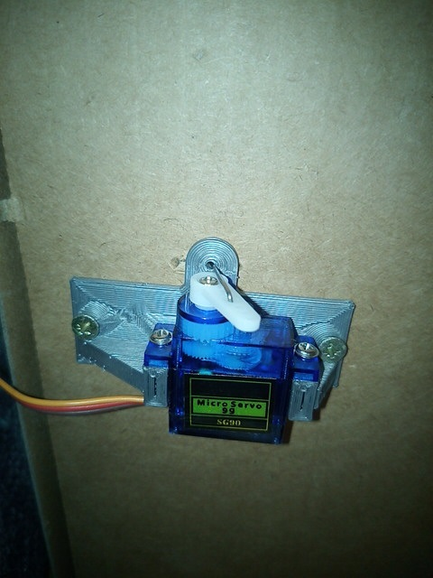
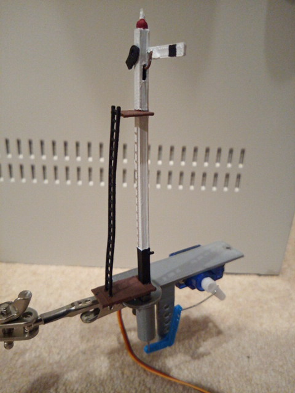
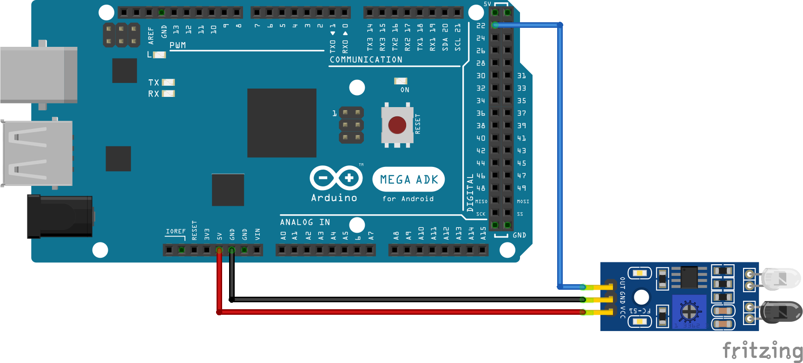
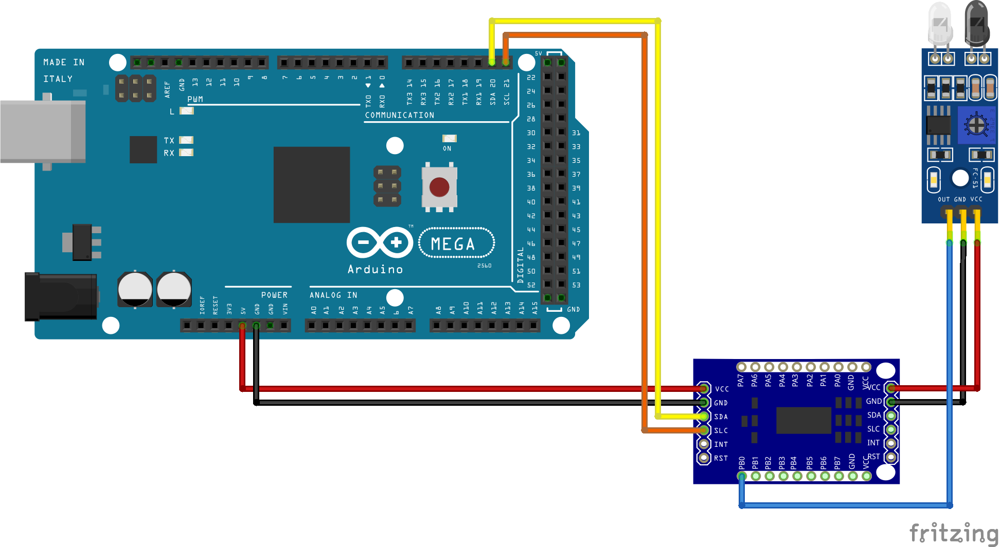

EXRAIL Objects - An Introduction¶
First we need the 'objects' that we will use for our automation sequences.
There are a number key objects that are important for creating sequences:
- Roster Entries - Your locos
- Turnouts/Points
- Servos for Semaphores/Signals and Animations
- Sensors
- Signals (Lights)
The process for creating these objects consists of:
- Adding the hardware (not strictly applicable to the roster)
- Configuring EX-CommandStation by modifying
`myAutomation.hso that it knows about the object - Re-uploading the software to the EX-CommandStation
COMMANDS are case sensitive
COMMANDS are case sensitive. i.e. they must be in uppercase. Text parameters you provide (aliases, descriptions) are not.
Characters to avoid
You must avoid using these characters in all descriptions: <, >, " as these are part of the DCC-EX protocol and are likely to prevent descriptions showing up in JMRI and other throttle software/clients.
AI does not understand EXRAIL
Do not waste your time asking ChatGPT, Copilot or Gemini to create EXRAIL scripts. They do not understand EXRAIL and will get it wrong 100% of the time.
Adding a Roster¶
EXRAIL has a ROSTER() function to allow you to define all of your locomotives with a list of their defined functions which is advertised to WiThrottle applications, just like turnouts/points and routes.
The functions can simply be listed as "F" numbers, or you can provide a text description of the function. Prefacing the function with a "*" indicates it is momentary, meaning it is only activated while holding that function button down.
In a text editor (e.g. notepad) create a new text file named 'myAutomation.h'. (Note the capital 'A' in the name. The case of all the characters is important.)
If you are already using EXRAIL and have a myAutomation.h, then just the add ROSTER(...) lines near the top of the file.
Add a line that looks like:
ROSTER(999,"Loco Name","F0/F1/*F2/F3/F4/F5/F6/F7/F8")
Where:
- 999 - is the DCC address of your loco
- My Loco Name - is anything you want to see as the name of this loco in the throttle apps
- F0 F1 F3 ... F27. - are the names that you want to see for the functions specific to this loco
- *F2 - note that if the function is 'momentary' (only on while the button is held down) rather than 'latching' then start the function label with a asterisk (*). The most common example of this is the Horn/Whistle which is commonly on F2 for decoders for US prototype locos.
Some more realistic examples might look like:
ROSTER(3,"Eng 3", "F0/F1/*F2/*F3/F4/F5/F6/F7/Mute/F9//") // Address 3, Eng 3, Function keys F0-F10
ROSTER(1224,"PE 1224","") // Motor Only Decoder, But use Engine Driver 'Preferences >In Phone Loco 'Sound'
ROSTER(1225,"PE 1225","Lights/Bell/*Whistle/*Short Whistle/Steam/On-Time/FX6 Bell Whistle/Dim Light/Mute")
ROSTER(4468,"LNER 4468","//Snd On/*Whistle/*Whistle2/Brake/F5 Drain/Coal Shvl/Guard-Squeal/Loaded/Coastng/Injector/Shunt-Door ~Opn-Cls/Couplng/BrakeVlv/Sfty Vlv/Shunting/BrkSql Off/No Momentm/Aux3/Fade Out/F22 Res/F23/Res//Aux 5/Aux6/Aux7/Aux 8")
Note: Add additional 'ROSTER(...)' lines for all your locos
ROSTER(1506, "HUSA", "Light/Bell/*Horn")
A more complex example with generic functions for the same loco (note the momentary F2 for horn):
ROSTER(1506, "HUSA", "F0/F1/*F2/F3/F4/F5/F6/F7/F8/F9/F10/F11/F12/F13/F14/F15/F16/F17/F18/F19/F20/F21/F22/F23/F24/F25/F26/F27/F28")
The same again, with more text functions defined to represent a number of different sounds:
ROSTER(1506, "HUSA", "Lights/Bell/*Horn/Air/Brake/Coupling/Compressor/Sand/Mute/F9/F10/F11/F12/F13/F14/F15/F16/F17/F18/F19/F20/F21/F22/F23/F24/F25/F26/F27/F28")
Locos with Unavailable Functions¶
If a function is not available just leave the spot empty. (Don't even have the space character.)
For example:
ROSTER(2825,"CN ES44AC","Headlight/Bell/*Horn/Coupler/Dynamic Brake///Flange Squeal/Startup & Shutdown")
Note the two missing text labels for positions F5 and F6. Engine Driver will skip those buttons and not display them at all in the interface since they do nothing for that loco.
Example of loco without sound:
ROSTER(2405,"AT&SF 2-8-0 2405","Headlight")
Note that it only has FO (the Headlight) and not following slashes.
Default Function Settings¶
If you add a roster entry for DCC address zero (0) it will become the default for all manually acquired locos.
ROSTER(0,"Default","Lights/Bell/*Horn/F3/F4/F5/F6/F7/F8/F9/10/F11/F12/F13/F14/F15/F16/F17/F18/F19/F20/F21/F22/F23/F24/F25/F26/27/F28/F29/F30/F31")
Put an * ahead of any that you want momentary
This is especially useful for European and British prototype sound decoders which sometimes use F1 and/or F2 for other purposes.
For example, to make F2 default to latching you may want to add...
ROSTER(0,"Default","Lights/Bell/F2/F3/F4/F5/F6/F7/F8/F9/10/F11/F12/F13/F14/F15/F16/F17/F18/F19/F20/F21/F22/F23/F24/F25/F26/27/F28/F29/F30/F31")
Adding Turnouts/Points¶
Turnouts/Points can included on your layout in one of the
- DCC turnouts/Points
- Servo Turnouts/Points
- Pin turnouts/Points
DCC Turnouts/Points¶
Adding the Hardware - DCC Turnouts/Points¶
If you have installed turnouts/points using DCC accessory decoders, you can config the EX-CommandStation so that it knows about it and you can control in in your sequences.
TURNOUT( id, addr, sub_addr [, "description"] )
The TURNOUT command defines DCC accessory decoder turnout/point in EXRAIL, which will appear in WiThrottle Protocol apps, Engine Driver, and JMRI in addition to being defined as a turnout/point within the CommandStation.
Configure myAutomation.h - DCC Turnouts/Points¶
Pin Turnouts/Points¶
Adding the Hardware - Pin Turnouts/Points¶
If you have installed turnouts/points using simple pin control, you can config the EXRAIL so that it knows about it and you can control in in your sequences.
PIN_TURNOUT( id, vpin [, "description"] )
The PIN_TURNOUT command defines a pin operated turnout/point in EXRAIL, which will appear in WiThrottle Protocol apps, Engine Driver, and JMRI in addition to being defined as a turnout/point within the CommandStation.
When setting up a turnout/point where multiple pins are required for control, the VIRTUAL_TURNOUT command should be used along with a control sequence. This is commonly used to configure solenoid-based turnout motors.
#define PULSE 10 // Set the duration of the pulse to 10ms
#define SINGLE_COIL_TURNOUT(t, p1, p2, p3, desc) \
VIRTUAL_TURNOUT(t, desc) \
DONE \
ONCLOSE(t) \
SET(p2) RESET(p3) \
SET(p1) DELAY(PULSE) RESET(p1) \
DONE \
ONTHROW(t) \
RESET(p2) SET(p3) \
SET(p1) DELAY(PULSE) RESET(p1) \
DONE
SINGLE_COIL_TURNOUT(101, 22, 24, 26, "Turnout 101")
Configure myAutomation.h - Pin Turnouts/Points¶
Servo Turnouts/Points¶
Adding the Hardware - Servo Turnouts/Points¶
To connect a servo to EX-CommandStation, you first need to get a module, based on the PCA9685 chip.

These are widely available from eBay, Amazon, etc. for a few dollars.
Note the pin connectors along the left side of the module - these are where you connect to the Arduino.
The 16 columns of three pins along the bottom of the module are where you connect the servos. The pins are arranged so that you can just plug a servo connector directly onto them, but be sure that the wire colours match the colours of the pins, i.e. yellow to yellow, red to red and black to black.
The servo module itself is powered from the Arduino, but the servos themselves contain motors that consume more current than the Arduino is able to supply, and so a separate 5V supply is required for the servos. This is connected to the green terminal block at the top of the module, with terminals labelled V+ and GND. The V+ terminal is connected to 5V and the GND to the 0V (ground) wire of the supply.
Connections to the Arduino are made with four jumper wires (Arduino: +5V, GND, SCL, SDA to servo module: VCC, GND, SCL, SDA), as shown on the following diagram:

In EX-CommandStation, the drivers for the PCA9685 module is already installed, and made available to for use as pin numbers 100-115. A servo is shown in the diagram, connected to the first set of pins on the module. This will be accessed using pin number 100.
Once you've made all of the connections, apply power to the Arduino.
Then, in a serial monitors, enter the command <D SERVO 100 450>. The servo should move, as long as it isn't (by some fluke) already in that position.
(See the serial monitors pages for the different serial monitors that are available to use.)
Enter <D SERVO 100 110> and this time it should definitely move. For the last parameter (servo position) you can use any value between about 105 and 490.
Try <D SERVO 100 450 3> and the servo should move slowly back.
You can use the servo to control turnouts/points, semaphore signals, engine shed doors, and other layout components, to make your layout more dynamic and exciting. In the picture below, you can see a servo mounted below the baseboard with a piece of wire passing through a slot cut in the baseboard, to operate a turnout/point.

And in the next picture you can see a servo that operates a semaphore signal. The signal, and its servo mounting bracket, were 3d-printed on a Creality Ender-3 printer.

Configure myAutomation.h - Servo Turnouts/Points¶
The myAutomation.h file needs to be altered so that the EX-CommandStation knows about each Turnout/Point.
EXRAIL supports three methods of controlling servos:
- Turnouts via the SERVO_TURNOUT directive
- Signals via the SERVO_SIGNAL directive
- Animations via the SERVO or SERVO2 directives
Controlling Servos for Turnouts/Points¶
The SERVO_TURNOUT directive defines a servo based turnout/point in EXRAIL, which will appear in WiThrottle Protocol apps, Engine Driver, and JMRI in addition to being defined as a turnout/point within the CommandStation.
As per the EXRAIL reference, turnouts/points are defined with the following syntax:
// Example
SERVO_TURNOUT(id, pin, active_angle, inactive_angle, profile [, "description"])
// Example
SERVO_TURNOUT(200, 101, 450, 110, Slow, "Example slow turnout/point definition")
/* An example definition for a servo connected to the second control pins of the first PCA9685 connected to the CommandStation, using the slow profile for prototypical operation: */The valid parameters are:
- id = Unique ID within the CommandStation (note these are shared across turnouts/points, sensors, and outputs).
- pin = The ID of the pin the servo is connected to, which would typically be the VPin ID of the PCA9685 controller board.
- active_angle = The angle to which the servo will move when the turnout/point is thrown (refer below for further detailed information).
- inactive_angle = The angle to which the servo will move when the turnout/point is closed (refer below for further detailed information).
- profile = There are five profiles to choose from that determine the speed at which a turnout/point will move: Instant, Fast, Medium, Slow, and Bounce (note we don't recommend Bounce for a turnout/point definition).
- description = A human-friendly description of the turnout/point that will appear in WiThrottle apps and Engine Driver. Note that this must be enclosed in quotes "".
Servos for Signals and Animations¶
See above for information on installing the servo hardware (it is the same as for a turnout/point).
Configure myAutomation.h - Servos for Signals an Animations¶
The myAutomation.h file needs to be altered so that the EX-CommandStation knows about each servo.
EXRAIL supports two methods of controlling servos that are not related to turnouts/points:
Servos for Signals¶
The SERVO_SIGNAL directive defines a servo based signal in EXRAIL to drive semaphore type signals as part of sequences or routes, or simply be set via a signal or similar.
Similar to pin based signals, servo signals are controlled by the ID of the red pin only.
Unlike servo based turnouts/points, there is no ID or description (they don't appear in throttles), and they use the "Bounce" profile with no other options available at the present time:
SERVO_SIGNAL(vpin, redpos, amberpos, greenpos)
// Example
SERVO_SIGNAL(102, 400, 250, 100)
/* A simple example using the third control pins of the first
PCA9685 connected to the CommandStation would be: */
- vpin = The ID of the pin the servo is connected to, which would typically be the VPin ID of the PCA9685 controller board.
- redpos = The angle to which the servo will move to for the red position.
- amberpos = The angle to which the servo will move to for the amber position.
- greenpos = The angle to which the servo will move to for the green position.
Servos for Animations¶
The SERVO and SERVO2 directives allow for servos to be used in various automations within EXRAIL.
Note that unlike a SERVO_TURNOUT these are not definitions that appear within WiThrottle apps, Engine Driver, or JMRI, but are instead actions designed to be used within EXRAIL automations.
As per the EXRAIL reference, these are defined with the following syntax:
SERVO(vpin, position, profile)
SERVO2(vpin, position, duration)
The valid parameters are:
- vpin = The ID of the pin the servo is connected to, which would typically be the VPin ID of the PCA9685 controller board.
- position = The angle to which the servo will move when the turnout/point is thrown (refer below for further detailed information).
- profile = There are five profiles to choose from that determine the speed at which a servo will move: Instant, Fast, Medium, Slow, and Bounce.
- duration = The time (in milliseconds (ms)) for the servo to be actively rotating.
// Example
AT(164)
SERVO(101, 400, Fast)
DONE
AFTER(164)
SERVO(101, 100, Slow)
DONE
/* As an example, consider a lineside worker that needs to be moved away
from the track when a train approaches, which is controlled by an infrared
sensor.
The SERVO is attached to VPin 101 (second control pin on first PCA9685),
with a sensor attached to VPin 164 (first pin on the first MCP23017):
This tells EXRAIL that when the sensor at VPin 164 is activated, the
lineside worker moves quickly back from the track for safety, and then
after the sensor has been deactivated, he can leisurely move back to his
working position (no one wants to rush back to work right?). */
Adding Sensors¶
Adding the Hardware - Sensors¶
On the Mega2560 Processor board:
Place IR Infrared or Optical Sensor's Output wire on Dpins 22, 23, 24 ... 49. Plus one wire to GND and a third wire to 5v.

If you need more sensors then there are available pins on the Mega, you use one or more I2C

TODO Link here to recommended pin/vpin allocations etc.
Configure myAutomation.h - Sensors¶
You don't actually require anything special to be added to myAutomation.h in advance of using them in an sequence.
Handling sensors in sequences is made easy because EXRAIL throws away the concept of interrupts ("oh… sensor 22 has been detected… which loco was that and whatever do I do now?") and instead has the sequences work on the basis of "do nothing, maintain speed until sensor 22 triggers, and then carry on in the script".
Sensor numbers are direct references to VPINs (virtual pin numbers) in the Hardware Abstraction Layer. For a Mega onboard GPIO pin, this is the same as the digital pin number. Other pin ranges refer to I/O expanders etc.
Hall effect sensors
Hall effect sensors work for some layouts, but beware of how you detect the back end of a train approaching the buffers in a siding, or knowing when the last car has cleared a crossing.
EX-CommandStation allows for sensors that are Active Low or Active High. This is particularly important for IR sensors that have been converted to detect by broken beam, rather than reflection. By making the sensor number negative, the sensor state is inverted. e.g. AT(-22).
Sensors with ID's 0 to 255 may be LATCHED/UNLATCHED in your script. If a sensor is latched on by the script, it can only be set off by the script… so AT(22) LATCH(22) for example effectively latches the sensor 22 on when detected once.
Sensor polling by JMRI is independent of this, and may continue if <S> commands are used. However there is now a way of defining JMRI sensors from within EXRAIL - see EXRAIL Command Reference - JMRI_SENSOR.
Adding Signals¶
Adding the Hardware - Signals¶
To connect a servo to EX-CommandStation, you first need to get a module, based on the PCA9685 chip.
These are widely available from eBay, Amazon, etc. for a few dollars.
Note the pin connectors along the left side of the module - these are where you connect to the Arduino.
The 16 columns of three pins along the bottom of the module are where you connect the LEDs.
In EX-CommandStation, the drivers for the PCA9685 module is already installed, and made available to for use as pin numbers 100-115.
On the PCA9685 Servo Signal Board:
- Connect individual LEDs on vpins 101, 102 ... 115 as needed
- Only use the -Gnd and Output+ vpins, NOT the center 5v pin
Configure myAutomation.h - Signals¶
The myAutomation.h file needs to be altered so that the EX-CommandStation knows about each Signal.
Signals setup on vpins 101, 102 ... 115
For each signal add a line in myAutomation.h in the form:
SIGNAL(red_pin, amber_pin, green_pin)
// always use the first red_pin as the signal_id for All signal color changes)
SIGNAL(106, 0, 107) // Red, Amber, Green For turnout/point 1
Combine the two commands Servo_Turnout and Signal
SERVO_SIGNAL(vpin, redpos, amberpos, greenpos)
// Use the first Red vpin# as the signal_id for All Signal color changes
// Use this to Combine the two commands Servo_Turnout and Signal above into One Function
SERVO_SIGNAL(106, 400, 0, 205) // Red vpin 106 for turnout/point 1, Thrown=Red, Close = Green